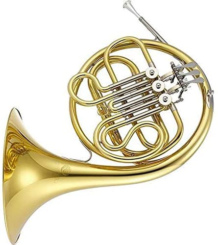
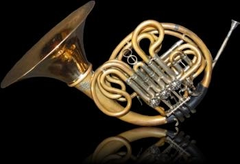

FRENCH HORN
Horn, also called French horn, French cor d’harmonie, German Waldhorn, the orchestral and military brass instrument derived from the trompe de chasse, a large circular hunting horn that appeared in France about 1650 and soon began to be used orchestrally. Use of the term French horn dates at least from the 17th century. Valves were added to the instrument in the early 19th century. Modern French horns exist in two principal types, French and German.
The French type, though once dominant in France and England, now is used infrequently. It has about 7 feet of integral tubing to which is added a separate coiled crook inserted at the narrow end, lowering the horn’s fundamental pitch. The crook, by lengthening the tubing and lowering the series of notes producible, puts the horn in the key of F, the basic tonality of the modern horn. The mouthpiece is slightly cup-shaped, the original straight funnel shape now being obsolete. The right hand of the player is placed inside the bell mouth, and the left actuates the three rotary valves; when depressed they deflect air through additional tubing and lower the pitch by certain intervals.
The German type, now universally accepted, has a relatively larger bore, dispenses with the separate crook, and uses rotary valves. It is built in F or a fourth higher in B♭, or, more commonly, as a double horn, introduced about 1900 by Fritz Kruspe, providing for instantaneous choice, by means of a thumb valve, of two tonalities, usually F and B♭ or B♭ and A. This choice allows technical benefits such as greater certainty on the higher notes. The German bore and the choked mouthpiece also facilitate complex passage work and can deliver a more massive tone. The range of the valved horn extends from the third B below middle C to the second F above.